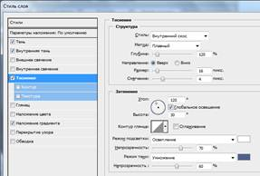
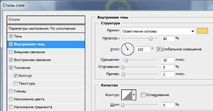

Крок 1
Створіть новий документ, вкажіть у пікселях висоту 2267 та ширину 2925. Розблокуйте цей слой (зніміть замочок зі слоя у палітрі слоїв перетягнувши його на значок кошика внизу панелі), назвіть його Фон та заповніть слой радіальний градієнт з такими параметрами: |
|
Крок 2
Скопіюйте папку Постер. Відкрийте зображення Силуети дерева. Скопіюйте все зображення (виділити клавішами Ctrl+Ф) на новий слой вашого завдання, назвіть слой Дерева. За допомогою Переміщення перетягнуть силуети дерев у нижній край. Зверніть увагу, щоб слой Дерева розташувався над слоєм Фон. |
|
Відкрийте вікно налаштування стилю слоя командою Слой – Стиль слоя – Наложение градиента (Gradient Overlay). Встановіть Градієнт з параметрами як у першому кроці.
|
|
Крок 3
Створіть новий слой. Назвіть його Черепа. Зверніть увагу, щоб цей слой був над слоєм Дерева. Завантажте кисті Черепа з папки Постер.
Виберіть кисть розміром 300px і намалюйте силуети черепів по краях зображення. |
|
Відкрийте вікно налаштування стилю слоя Черепа командою Слой – Стиль слоя – Наложение градиента (Gradient Overlay). Встановіть Градієнт з параметрами як у першому кроці. |
|
Крок 4
Потім візьміть інструмент Текст, шрифт Algeria, колір #727ea4. Зробіть першу і останню букви розміром 600, а середні 300.
Змініть форму текстового шару. Клацніть правою кнопкою миші по іконці шару і виберіть Преобразовать в кривые (Convert to shape).
Змініть текст за допомогою Трансформации (Ctrl+T), розтягнувши його по вертикалі/
Застосуйте Трансформация - Деформация (Warp). |
|
Виконайте команду Слой – Растировать – Текст.
Перейдіть в меню Фильтр -> Пластика (Filter> Liquify).
Використовуйте Деформація (Forward Warp Tool) – це перша кнопка і встановіть розміром 80-130px, щоб змінити і розтягнути кути букв. Змініть кожну букву. |
|
Крок 5
Для слоя з текстом Helloween виконати команду Слой – Стиль слоя – Тень, або клацнути два рази лівою кнопкою миші щоб відкрити вікно Стиль слоя. Застосуєте наступні команди: |
Тень
|
Внутренняя тень
|
Тиснение
 |
Наложение градиента
|
Результат
|
Крок 6
Створіть новий порожній слой Малі черепа і виберіть іншу кисть черепа розміром поменше 200px, щоб створити силуети навколо тексту.
Крок 7
Застосуйте для слоя Малі черепа такі ж ефекти стилю слоя як і для тексту Helloween.
Для цього на слої Helloween натисніть праву кнопку миші та виберіть команду Скопировать стиль слоя.
Далі на слої Малі черепа натиснути праву кнопку миші та вибрати команду Вклеить стиль слоя. |
|
Крок 8
Відкрийте та скопіюйте у свою роботу зображення гарбуза і хвостика. Слої назвати Гарбуз та Хвостик.
Крок 9
Дублюйте шар з гарбузом – на шарі Гарбуз натиснути праву кнопку миші та вибрати команду Создать дубликат слоя. Слой буде називатися Гарбуз (копия). Перетягнуть копію під Гарбуз.
Сховайте оригінал. Напроти слоя Гарбуз натисніть на око, щоб приховати слой. |
|
Крок 10
Зборіть активним слой Гарбуз (копія) та застосуйте коригувальний слой Уровни (Levels) – Слой – Новый корректирующий слой – Уровни, з такими параметрами: |
|
Крок 11
Зробіть активним слой Гарбуз. Звернуть увагу, щоб слой Гарбуз був над слоєм Гарбуз (копія).
Крок 12
Скопіюйте та вставте на новий слой зображення мозгів над шаром з гарбузом. Назвати слой Мозги.
Виділіть мозги за допомогою клавіш Ctrl + клік по мініатюри слоя Мозги.
Перейдіть на слой Гарбуз і додайте маску кнопкою .
Ви отримаєте форму з контурами текстури і більш темна гарбуз повинна бути видима через них. |
|
Крок 12
Застосуйте наступні ефекти стилю слоя до замаскованого слоя Гарбуз. Слой – Стиль слоя – Тень: |
 |
|
|

|
|